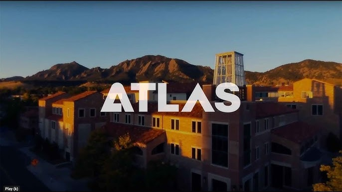

About Me

I am currently studying Creative Technology and Design. I enjoy learning how technology works behind the scenes and building interactive systems.
Some of my interests include creative coding, website design, and experimenting with different forms of digital media.